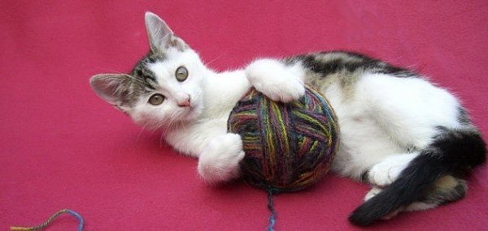

5 интересных фактов о кошках

1) Предки современных домашних кошек – миациды, маленькие животные, жившие на деревьях свыше 40 млн лет назад. Первые представители кошек в их привычном виде появились около 12 млн лет назад.
2) Кошки не способны чувствовать вкус сладкого.
3) Дверь для домашних кошек изобрел выдающийся ученый Исаак Ньютон.
4) Коты чаще всего левши, а кошки – правши.
5) Хозяева котов на 17% чаще являются обладателями ученой степени.
Вернуться на главную